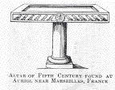
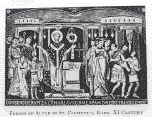
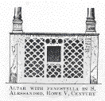
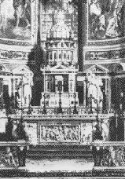
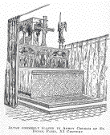

|
| A B C D E F G H I J K L M N O P Q R S T U V W X Y Z |
 The Christian altar consists of an elevated surface, tabular in form, on which the Sacrifice of the Mass is offered. The earliest Scripture reference to the altar is in St. Paul (1 Corinthians 10:21); the Apostle contrasts the "table of the Lord" (trapeza Kyriou) on which the Eucharist is offered, with the "table of devils", or pagan altars. Trapeza continued to be the favourite term for altar among the Greek Fathers and in Greek liturgies, either used alone or with the addition of such reverential qualifying terms as iera, mystike, The Epistle to the Hebrews (13:10) refers to the Christian altar as thysiasterion, the word by which the Septuagint alludes to Noah's altar. This term occurs in several of the Epistles of St. Ignatius (Ad Eph. v; Magnes. iv, 7; Philad. 4), as well as in the writings of a number of fourth and fifth century Fathers and historians; Eusebius employs it to describe the altar of the great church at Tyre (Church History X.4.44). Trapeza, however, was the term most frequently in use. The word bomos to designate an altar. was carefully avoided by the Christians of the first age, because of its pagan associations; it is first used by Synesius, Bishop of Cyrene, a writer of the early fifth century. The terms altare, mensa, ara, altarium, with or without a genitive addition (as mensa Domini), are employed by the Latin fathers to designate an altar. Ara, however, is more commonly applied to pagan altars, though Tertullian speaks of the Christian altar as ara Dei. But St. Cyprian makes a sharp distinction between ara and altare, pagan altars being aras diaboli, while the Christian altar is altare Dei [quasi post aras diaboli accedere ad altare Dei fas sit (Ep. lxv, ed. Hartel, II, 722; P.L., Ep. lxiv, IV, 389)]. Altare was the word most commonly used for altar, and was equivalent to the Greek trapeza.
 The earliest Christian altars were of wood, and identical in form with the ordinary house tables. The tables represented in the Eucharistic frescoes of the catacombs enable us to obtain an idea of their appearance. The most ancient, as well as the most remarkable, of these frescoes, that of the Fractio Panis found in the Capella Greca, which dates from the first decades of the second century, shows seven persons seated on a semi-circular divan before a table of the same form. Tabular-shaped altars of wood continued in use till well on in the Middle Ages. St. Athanasius speaks of a wooden altar which was burned by the Count Heraclius (Athan. ad Mon., lvi), and St. Augustine relates that the Donatists tore apart a wooden altar under which the orthodox Bishop Maximianus had taken refuge (Ep. clxxxv, ch. vii, P.L., XXXIII, 805). The first legislation against such altars dates from the year 517, when the Council of Epaon, in Gaul, forbade the consecration of any but stone Altars (Mansi, Coll. Conc., VIII, 562). But this prohibition concerned only a small part of the Christian world, and for several centuries afterwards altars of wood were used, until the growing preference for altars of more durable material finally supplanted them. The two table altars preserved in the churches of St. John Lateran and St. Pudentiana are the only ancient altars of wood that have been preserved. According to a local tradition, St. Peter offered the Holy Sacrifice on each, but the evidence for this is not convincing. The earliest stone altars were the tombs of the martyrs interred in the Roman Catacombs. The practice of celebrating Mass on the tombs of martyrs can be traced with a large degree of probability to the first quarter of the second century. The Fractio Panis fresco of the Capella Greca, which belongs to this period is located in the apse directly above a small cavity which Wilpert supposes (Fractio Panis, 18) to have contained the relics of a martyr, and it is highly probable that the stone covering this tomb served as an altar. But the celebration of the Eucharist on the tombs of martyrs in the Catacombs was, even in the first age, the exception rather than the rule. (See ARCOSOLIUM) The regular Sunday services were held in the private houses which were the churches of the period. Nevertheless. the idea of the stone altar, the use of which afterwards became universal in the West, is evidently derived from the custom of celebrating the anniversaries and other feasts in honour of those who died for the Faith. Probably, the custom itself was suggested by the message in the Apocalypse (vi, 9) "I saw under the altar the souls of them that were slain for the word of God." With the age of peace, and especially under the pontificate of Pope Damasus (366-384), basilicas and chapels were erected in Rome and elsewhere in honour of the most famous martyrs, and the altars, when at all possible, were located directly above their tombs. The "Liber Pontificalis" attributes to Pope Felix I (269-274) a decree to the effect that Mass should be celebrated on the tombs of the martyrs (constituit supra memorias martyrum missas celebrare, "Lib. Pont.", ed. Duchesne, I, 158). However this may be, it is clear from the testimony of this authority that the custom alluded to was regarded at the beginning of the sixth century as very ancient (op. cit., loc. cit., note 2). For the fourth century we have abundant testimony, literary and monumental. The altars of the basilicas of St. Peter and St. Paul, erected by Constantine, were directly above the Apostles' tombs. Speaking of St. Hippolytus, the poet Prudentius refers to the altar above his tomb as follows:
Talibus Hippolyei corpus mandatur opertis
Propter ubi apposita est ara dicata Deo.
Finally, the translation of the bodies of the martyrs Sts. Gervasius and Protasius by St. Ambrose to the Ambrosian basilica in Milan is an evidence that the practice of offering the Holy Sacrifice on the tombs of martyrs was long established. The great veneration in which the martyrs were held from the fourth century had considerable influence in effecting two changes of importance with regard to altars. The stone slab enclosing the martyr's grave suggested the stone altar, and the presence of the martyr's relics beneath the altar was responsible for the tomblike under-structure known as the confessio. The use of stone altars in the East in the fourth century is attested by St. Gregory of Nyssa (P.G., XLVI, 581) and St. John Chrysostom (Hom. in I Cor., xx); and in the West, from the sixth century, the sentiment in favour of their exclusive use is indicated by the Decree of the Council of Epaon alluded to above. Yet even in the West wooden altars existed as late as the reign of Charlemagne, as we infer from a capitulary of this emperor forbidding the celebration of Mass except on stone tables consecrated by the bishop [in mensis lapideis ab episcopis consecratis (P.L., XCVII, 124)]. From the ninth century, however, few traces of the use of wooden altars are found in the domain of Latin Christianity, but the Greek Church, up to the present time, permits the employment of wood, stone, or metal.
 Martyrs were Confessors of the Faith — Christians who "confessed" Christ before men at the cost of their lives — hence the name confessio was applied to their last resting-place, when, as happened frequently from the fourth century, an altar was erected over it. Up to the seventh century in Rome, as we learn from a letter of St. Gregory the Great to the Empress Constantia, a strong sentiment against disturbing the bodies of the martyrs prevailed. This fact accounts for the erection of the early Roman basilicas, no matter what the obstacles encountered, over the tombs of martyrs; the church was brought to the martyr, not the martyr to the church. The altar in such cases was placed above the tomb with which it was brought into the closest relation possible. In St. Peter's, for instance, where the body of the Apostle was interred at a considerable depth below the level of the floor of the basilica, a vertical shaft, similar to the luminaria in some of the catacombs, was constructed between the Altar and the sepulchre. Across this shaft, at some distance from each other, were two perforated plates, called cataractae, on which cloths (brandea) were placed for a time, and afterwards highly treasured as relics. But the remains of St. Peter, and those of St. Paul, were never disturbed. The tombs of both Apostles were enclosed by Constantine in cubical cases, each adorned with a gold cross (Lib. Pont., ed. Duchesne, I, 176). From that date to the present time, except in 1594, when Pope Clement VIII with Bellarmine and some other cardinals saw the cross of Constantine on the tomb of St. Peter, the interior of their tombs has been hidden from view. Another form of confessio was that in which the slab enclosing the martyr's tomb was on a level with the floor of the sanctuary (presbyterium). As the sanctuary was elevated above the floor of the basilica the altar could thus be placed immediately above the tomb, while the people in the body of the church could approach the confessio and through a grating (fenestella confessionis) obtain a view of the relics. One of the best examples of this form of confessio is seen at Rome in the Church of San Giorgio in Velabro, where the ancient model is followed closely A modified form of the latter (fifth-century) state of confessio is that in the basilica of San Alessandro on the Via Nomentana, about seven miles from Rome. In this case the sanctuary floor was not elevated above the floor of the Basilica, and therefore the fenestella occupied the space between the floor and the table of the altar, thus forming a combination tomb and table altar. In the fenestella of this altar there is a square opening through which brandea could be placed on the tomb.
 From the fourth century altars were, in many instances, covered by a canopy supported on four columns, which not only formed a protection against possible accidents, but in a greater degree served as an architectural feature of importance. This canopy was known as the ciborium or tegurium. The idea of it may have been suggested by memoriae such as those which from the earliest times protected the graves of St. Peter and St. Paul; when the basilicas of these Apostles were erected, and their tombs became altars, the appropriateness of protecting-structures over the tomb-altars, bearing a certain resemblance to those which already existed, would naturally suggest itself. However this may be, the dignified and beautifully ornamented ciborium as the central point of the basilica, where all religious functions were performed, was an artistic necessity. The altar of the basilica was simple in the extreme, and, consequently, in itself too small and insignificant to form a centre which would be in keeping with the remainder of the sacred edifice. The ciborium admirably met this requirement. The altars of the basilicas erected by Constantine at Rome were surmounted by ciboria, one of which, in the Lateran, was known as a fastigium and is described with some detail in the "Liber Pontificalis". The roof was of silver and weighed 2,025 pounds; the columns were probably of marble or of porphyry, like those of St. Peter's. On the front of the ciborium was a scene which about this time became a favourite subject with Christian artists: Christ enthroned in the midst of the Apostles. All the figures were five feet in height; the statue of Our Lord weighed 120 pounds, and those of the Apostles ninety pounds each. On the opposite side, facing the apse, Our Lord was again represented enthroned, but surrounded by four Angels with spears; a good idea of the appearance of the Angels may be had from a mosaic of the same subject in the church of Sant' Apollinare Nuovo, at Ravenna. The interior of the Lateran Ciborium was covered with gold, and from the centre hung a chandelier (farus) "of purest gold, with fifty dolphins of purest gold weighing fifty pounds, with chains weighing twenty-five pounds". Suspended from the arches of the ciborium, or in close proximity to the altar, were "four crowns of purest gold, with twenty dolphins, each fifteen pounds, and before the altar was a chandelier of gold, with eighty dolphins, in which pure nard was burned". Seven other altars were erected in the basilica, probably to receive the oblations; Duchesne notes the coincidence of the number of subsidiary altars with the number of deacons in the Roman Church (Liber Pont., I, 172, and note 33, 191). This splendid canopy was carried away by Alaric in 410, but a new ciborium was erected by the Emperor Valentinian III at the request of Pope Sixtus III (432-440). Only fragments of a few of the more ancient ciboria have been preserved to our time, but the ciborium of Sant' Apollinare in Classe, Ravenna (ninth century), reproduces their principal features.
In his description of the Basilica of Tyre the historian Eusebius says (Church History X.4) that the altar was enclosed "with wooden lattice-work, accurately wrought with artistic carving", so that it might be rendered "inaccessible to the multitude". The partition thus described, which separated the prebyterium and choir from the nave, was the cancellus or chancel. In a later age the name "chancel" came to be applied to the presbyterium itself. Portions of a number of ancient chancels have been found in Roman churches, and from reconstructions made with their help by archaeologists a good idea of the early chancel may be obtained. Two of these restored chancels, made from fragments found in the oratories of Equizio and in the Church of San Lorenzo, show the style of workmanship, which consisted of geometrical designs. Chancels were made of wood, stone, or metal.
Constantine the Great, according to the "Liber Pontificalis", erected in St Peter's, in front of the presbyterium, six marble columns adorned with vine-traceries. Whether these columns were originally connected by an architrave is uncertain, but in the time of Pope Sergius III (687-701) this feature existed. They seem to have served for no special object, and therefore were probably intended to add dignity to the presbyterium. In the Church of the Resurrection at Jerusalem, also erected by Constantine, there were twelve similar columns, corresponding with the number of the Apostles. The iconostasis of the Greek Church and the rood-screen of Gothic churches are evidently traceable to this ornamental feature of the two fourth-century basilicas. The iconostasis, like the chancel in the Latin Church, separated the presbyterium from the nave. Its original form was that of an open screen, but from the eighth century, owing to the reaction against iconoclasm, it began to assume its present form of a closed screen decorated with paintings. A colonnade of six columns (seventh century) in the Cathedral of Torcello gives an idea of the colonnades in the Constantinian basilicas referred to.
During the first age of Christianity the faithful were allowed, when persecution was imminent, to reserve the Eucharist in their homes. (See ARCA.) This custom gradually disappeared in the West about the fourth century. The Sacred Hosts for the sick were then kept in churches where special receptacles were prepared for them. These receptacles mere either in the form of a dove which hung from the roof of the ciborium, or, where a ciborium did not exist, of a tower (the turris Eucharistica) which was placed in an armarium. In a drawing of the thirteenth-century altar of the Cathedral of Arras an arrangement is seen which is evidently a reminiscence of the suspended dove in those countries where the ciborium had disappeared: the Eucharistic tower is suspended above the altar from a staff in the form of a crosier. The more ordinary receptacle for this purpose, up to the seventeenth century, was the armarium near, or an octagon-shaped tower placed on the Gospel side of, the altar. Tabernacles of the latter kind were generally of stone or wood; those of the dove class of some precious metal. Our present form of tabernacle dates from the end of the sixteenth century.
No special formula for the consecration of altars was in use in the Roman Church before the eighth century. In substance, however, what we understand by consecration was practiced in the fourth century. This original form of consecration consisted in the solemn transfer of the relics of a martyr to the altar of a newly erected church The translation of the bodies of Sts. Gervasius and Protasius, made by St. Ambrose, is the first recorded example of the kind. (See AMBROSIAN BASILICA.) But such translations of the mortal remains of martyrs were at this time, and long afterwards, of rare occurrence. Relics, however, by which we must understand objects from a martyr's tomb (the brandea mentioned above), were regarded with only a less degree of respect than the bodies of the martyrs themselves, and served as it were to multiply the body of the saint. This reverence for objects associated with a martyr gave rise to the custom of entombing such relics beneath the altars of newly erected churches, until it ultimately became the rule not to dedicate a church without them. An early example of this practice was the dedication of the basilica Romana by St. Ambrose with pignora of St. Peter and St. Paul brought from Rome (Vita Ambros., by Paulinus, c. xxxiii). St. Gregory of Tours (Lib. II, de Mirac., I, P.L., LXXI, 828) mentions the dedication of the Church of St. Julian in his episcopal city with relics of that saint and of another. When relics of the saints could not be procured, consecrated Hosts and fragments of the Gospels were sometimes used; concerning the use of the former for this purpose the English Synod of Calchut (Celicyth, Chelsea, 816) made a regulation (can. 22). Up to the middle of the sixth century in the Roman Church the solemn celebration of Mass was the only form of dedication. If, however, it had been decided to place in the altar the relics of a martyr, this ceremony preceded the first solemn function in the new edifice. Duchesne points out (op. cit., 406) that the liturgical prayers of the Gelasian Sacramentary recited for the consecration of altars bear the unmistakable stamp of the funeral liturgy, this fact is evidently attributable to the Custom of entombing relics, regarded as representing the bodies of the saints, at the time of dedication. The translation of relics was a second solemn interment of the saint's body, and hence the liturgical prayers composed for such occasions appropriately bore the characteristics of the burial service. The principal features of the earliest form of consecration in the Roman Church, as given in the Gelasian Sacramentary, are as follows: The bishop with his clergy, chanting the litany, first proceeded in solemn procession to the place where the relics were kept. A prayer was then chanted and the relics were borne by the bishop to the door of the church and there placed in the custody of a priest. The bishop then entered the church, accompanied by his immediate attendants, and after exorcising the water and mixing with it a few drops of chrism, he prepared the mortar for enclosing the sepulchre. With a sponge he then washed the table of the altar, and returning to the door he sprinkled the people with what remained of the holy water. After this he took the relics and re-entered the church, followed by the clergy and people chanting another litany. The sepulchre was then anointed with chrism, the relics were placed therein, and the tomb sealed. The ceremony concluded with the solemn celebration of Mass. The Gallican liturgy of consecration, unlike that of Rome, partook of the character of the liturgy for the administration of baptism and confirmation rather than that of the funeral liturgy. "Just as the Christian is dedicated by water and oil, by baptism and confirmation, so the altar first, then the church, is consecrated by ablution and unction" (Duchesne, op. cit., 407-409). In the eighth and ninth centuries attempts were made by Frankish liturgists to combine the two liturgies of Rome and Gaul, from the result then achieved has developed the actual consecration ritual of the Western Church. In the Greek Church the dedication of the altar was a ceremony distinct from that of the deposition of relics, the two functions were ordinarily performed on different days. On the first day the table of the altar was placed on its support of columns by the bishop in person. After this he proceeded to the consecration which consisted of washing the table, first with baptismal water, then with wine. The altar was next anointed with chrism and incensed. The following day the relics were placed in the sepulchre with the greatest solemnity. Duchesne calls attention to the close resemblance between the Gallican and the Byzantine liturgy for the consecration of altars (op. cit., 416).
The custom of praying with faces turned towards the East is probably as old as Christianity. The earliest allusion to it in Christian literature is in the second book of the Apostolic Constitutions (200-250, probably) which prescribes that a church should be oblong "with its head to the East". Tertullian also speaks of churches as erected in "high and open places, and facing the light (Adv. Valent., iii). The reason for this practice, which did not originate with Christianity, was given by St. Gregory of Nyssa (De Orat. Dominic., P.G., XLIV, 1183), is that the Orient is the first home of the human race, the seat of the earthly paradise. In the Middle Ages additional reasons for orientation were given, namely, that Our Lord from the Cross looked towards the West, and from the East He shall come for the Last Judgment (Durand, Rationale, V, 2; St. Thomas, Summa Theologica II-II:84:3). The existence of the custom among pagans is referred to by Clement of Alexandria, who states that their "most ancient temples looked towards the West, that people might be taught to turn to the East when facing the images" (Stromata, vii. 17, 43). The form of orientation which in the Middle Ages was generally adopted consisted in placing the apse and altar in the Eastern end of the basilica. A system of orientation exactly the opposite of this was adopted in the basilicas of the age of Constantine. The Lateran, St. Peter's, St. Paul's, and San Lorenzo in Rome, as well as the Basilicas of Tyre and Antioch and the Church of the Resurrection at Jerusalem, had their apses facing the West. Thus, in these cases the bishop from his throne in the apse looked towards the East. At Rome the second Basilica of St. Paul, erected in 389, and the Basilica of San Pietro in Vincoli, erected probably in the latter half of the fourth century reversed this order and complied with the rule. The Eastern apse is the rule also in the churches of Ravenna, and generally throughout the East. Whether this form of orientation exercised any influence on the change of the celebrant from the back to the front of the altar cannot well be determined but at all events this custom gradually supplanted the older one, and it became the rule for both priest and people to look in the same direction, namely, towards the East (Mabillon, Museum Italicum, ii, 9). Strict adherence to either form of orientation was, necessarily, in many instances impossible, the direction of streets in cities naturally governed the position of churches. Some of the most ancient churches of Rome were directed towards various points of the compass.
 Few ancient altars have survived the ravages of time. Probably the oldest of these is the fifth-century altar discovered at Auriol, near Marseilles. The stone table, on the front of which the monogram of Christ, with twelve doves, is engraved, rests on a single column. Similar in construction to this are three altars in the confessio of the Church of St. Caecilia in Rome, which are attributed to the ninth century. In two sixth-century mosaics of San Vitale and Sant' Apollinare in Classe, Ravenna, two table altars of wood, resting on four feet, are represented. They are covered by a long cloth which completely hides the tables. Enlart regards it as probable that the tables enclosed in the altars of the Lateran and Santa Pudenziana are similar in appearance (Manuel d'archéol. Française, I, Archit. Relig., note 1). Altars of the tomb type, like the sarcophagi of the Constantinian epoch, offered a surface the front of which was well adapted to sculptured decoration. The earliest existing example of an altar with a carved antependium, however, in the Church of Cividale, dates from the beginning of the eighth century. Our Lord is here represented in the centre of the antependium, accompanied by angels, while the hand of the Father appears above His head. Of greater interest is the antependium, as well as the side panels, of the altar of the Ambrosian basilica in Milan. The front, over seven feet in length, is of gold, the back and sides of silver. Both front and back are paneled into three compartments, in which reliefs from the life of Christ and St. Ambrose are represented. The subjects of the central panel of the front are a Greek cross, in the centre of which Our Lord is represented; in the arms of the cross are the symbols of the four Evangelists, while the remaining spaces contain representations of the Apostles; Crosses are represented on the ends also, with angels in various attitudes. The famous reredos of St. Mark's, Venice, known as the Pala d'oro, which dates from the tenth century, was originally an antependium. To the following (eleventh) century belongs the splendid golden antependium presented to the Cathedral of Basle by the Emperor Henry II now in the Musée de Cluny at Paris. In five column arcades the figures of Our Lord, the Archangels Gabriel, Raphael, and Michael, and St. Benedict are represented. Such costly antependia as these were of course rare; the material more commonly used was wood, with representations of Christ or saints. A painted wooden panel, arcaded in a manner very similar to the antependium of Basle, is preserved in the episcopal museum of Münster in Westphalia. It dates from the twelfth century. Down to the tenth century the ciborium was in general use as a protection and ornamental feature of altars. The ciborium of Sant' Apollinare in Classe, Ravenna, which belongs to the early ninth century, is, as noted above, essentially the same as those of the earlier period. After the tenth century, however, except in Italy and the Orient, where ciboria were always in favour, they were rarely employed. The best example of a ciborium of the early Gothic period is in the Church of Our Lady of Halberstadt, Germany; two other Gothic ciboria are in the cathedrals of Ratisbon and Vienna. In Italy numerous medieval ciboria still exist. The early types of Christian altar, unlike those most in vogue during the Middle Ages, had no superstructure. So long, indeed, as the bishop's throne occupied the centre of the apse, a reredos (retabulum), which would conceal the bishop from the congregation, would have been impracticable. By degrees, as we have seen, the custom was introduced, with the general adoption of the Eastern apse of the celebrant facing in the same direction as the congregation, and it became possible to introduce an ornamental panel at the back of the altar similar to the antependium. Probably the custom of exposing relics on the altar, approved by Pope Leo IV (P.L., CXV, 677), exercised some influence on the development of the reredos, and the antependium naturally suggested its form. The reredos was introduced about the beginning of the twelfth century. The oldest existing example of it is the Pala d'oro of St. Mark's, Venice, which, after reconstruction, was detached from the front and placed at the back of the altar by the Doge Ordefalo Faliero, in 1105. The Church of Kloster-Neuburg, near Vienna, also contains a beautiful example of a twelfth-century reredos, with representations from the Old and the New Testament. The reredos of the thirteenth and fourteenth centuries was only moderately elevated when compared with the style which found favour in the late Gothic and Renaissance periods. The practice of exhibiting relics was, as we have seen, authorized in the ninth century, but not before the thirteenth century were reliquaries permanently kept on, or more frequently behind, the altar. In the latter case a platform was specially constructed for the purpose In some instances the reliquaries formed part of the reredos but the more common arrangement was to place them on a platform. This practice of permanently exposing relics behind the altar influenced certain other changes of importance with regard to the ciborium and the confessio. The latter feature now disappeared; there was no longer a reason for its existence, since the relics were provided with a new location; and the ciborium was modified into a baldacchino elevated above the reliquary back of the altar. An example of this arrangement, of the thirteenth century, may be seen in the chapel of the Blessed Virgin, in the
church of St. Denis, Paris. At first only the altar of relics, usually placed at the end of the apse, was provided with a reredos, but in the course of the fourteenth century the main altar also was similarly provided. The comparative simplicity of the early reredos gradually yielded, in the course of the fourteenth, fifteenth, and sixteenth centuries, to the prevalent taste for richness of adornment, and reliquaries became of secondary consideration. The reredos now became a great structure, reaching in many instances to the vault of the church, containing life-sized statues of Our Lord, the Blessed Virgin, and the saints, besides a number of representations in relief of sacred subjects. This structure was usually of wood, carved or painted. It was connected with the altar by means of a predella, or altar-step, similar to the predella of modern altars, for candelabra, on which the Apostles or other saints were depicted. Towards the end of the sixteenth century the influence of the Renaissance effected another change in the form of the altar. Porticoes, modelled after the triumphal arches of antiquity, with statues in high and low relief, took the place of the reredos, and more costly materials, such as rare marbles. were employed in their construction. In the seventeenth and eighteenth centuries especially, altars of the Renaissance style became surcharged with ornamentation, often in bad taste and of inferior materials.
APA citation. (1907). History of the Christian Altar. In The Catholic Encyclopedia. New York: Robert Appleton Company. Retrieved April 26, 2010 from New Advent: http://www.newadvent.org/cathen/01362a.htm
MLA citation. "History of the Christian Altar." The Catholic Encyclopedia. Vol. 1. New York: Robert Appleton Company, 1907. 26 Apr. 2010 <http://www.newadvent.org/cathen/01362a.htm>.
Transcription. This article was transcribed for New Advent by Michael C. Tinkler — images scanned by Wm Stuart French, Jr.
Ecclesiastical approbation. Nihil Obstat. March 1, 1907. Remy Lafort, S.T.D., Censor. Imprimatur. +John Cardinal Farley, Archbishop of New York.
Contact information. The editor of New Advent is Kevin Knight. My email address is webmaster at newadvent.org. (To help fight spam, this address might change occasionally.) Regrettably, I can't reply to every letter, but I greatly appreciate your feedback — especially notifications about typographical errors and inappropriate ads.
{kind=link}
{kind=link}
{kind=link}
{kind=link}
{kind=link}
{kind=link}